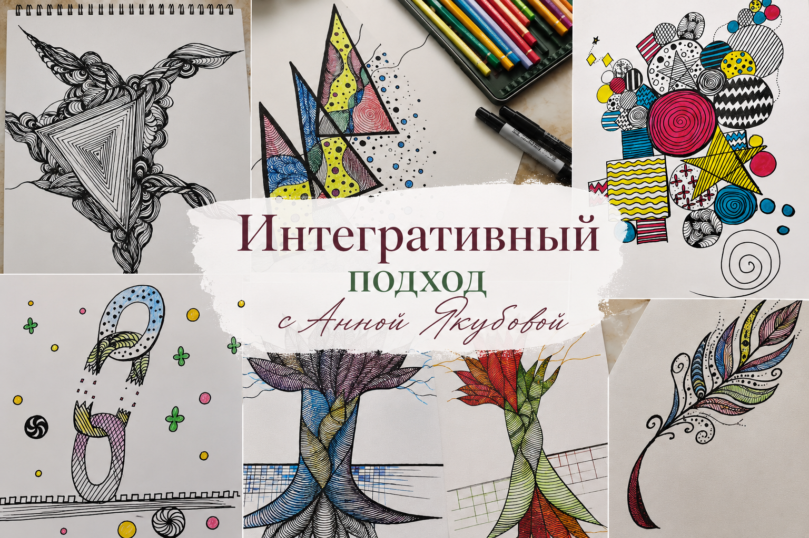

Интегративный подход MAGICART — Анна Якубова
Новейший современный метод работы с сознанием и подсознанием через особое рисование — на стыке науки, искусства и глубинной психологии.
Интегративный подход MAGICART — это новейший современный метод работы с сознанием и подсознанием через особое рисование.
Magic — это не что-то магическое или эзотерическое. Данным словом создатели метода хотели просто привнести немного лёгкости в название.
Четыре уровня личности
В данном методе мы работаем сразу с несколькими уровнями личности — и делаем это через определённые алгоритмы рисования, используя символы, фигуры и паттерны, понятные нашему бессознательному.
- УровеньМысли
- УровеньЭмоции
- УровеньТело
- УровеньПоведение
Magicart включает в себя несколько научных направлений:
- Психология и арт-терапия исцеление через образ
- Коучинг путь к результату
- Сакральная геометрия красота мироздания
- Зентангл медитативность
- Нейрографика построение новых нейронных связей
Сила метода
Метод позволяет не только выявлять внутреннее состояние, но и целенаправленно его трансформировать!
С помощью интегративного метода в личной сессии можно глубоко проработать такие запросы, как:
- Доход и карьера рост дохода, карьера
- Уверенность внутренняя опора, уверенность в себе
- Отношения отношения, любовь, гармония
- Эмоции снижение страхов, обид, тревожности
и многое другое
Доверяйте работу со своим сознанием и подсознанием только сертифицированным специалистам!